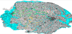

|  |
MK_3By Kurtis Garbutt |
The simulation starts by reading and displaying GIS data describing the road network of Norfolk, the political boundaries (LSOA), and the area's flood zone. The simulation reads a .CSV file that includes road network data and demographic data and places agents on the road network at pre-assigned locations. These agents are also assigned destinations by the user ('goals'). When the simulation starts, the agents determine the shortest path (A*) to their destination and move towards their destinations. Once they arrive, the agents wait for all other agents to arrive before they return to their start points. The cycle continues until ended by the user.